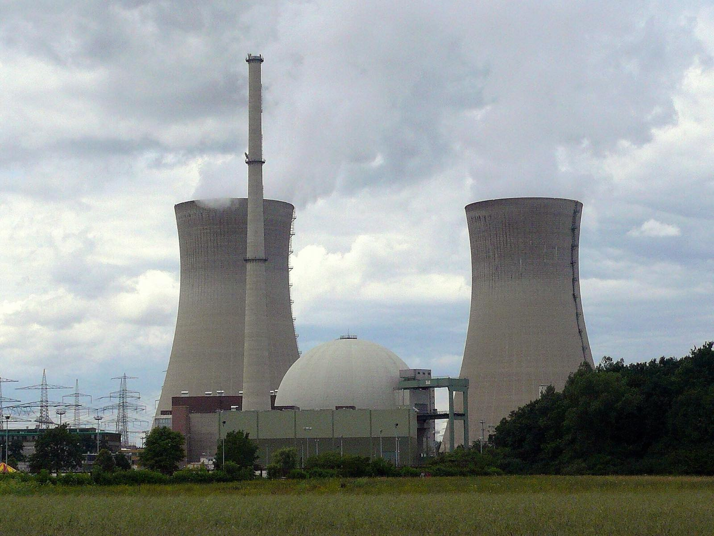

Why nuclear
Energy that does more than keep the lights on.
A reactor makes steady heat, neutrons and electricity at the same time. Each one can replace fossil fuel somewhere a community depends on it.
ReactorTwin is an agent that drives a machine-learning simulation of a pressurized water reactor core. It helps engineers design and screen cores in milliseconds, so reactors that bring heat, medicine, clean water and clean fuel reach more communities, sooner.
Each design change to a core is checked with physics solves that take seconds to hours, and a loading-pattern study can need thousands of them. ReactorTwin puts a fast learned surrogate in front of those solves, with an agent that knows how to use it. Engineers explore in a conversation, spend expensive compute only on the options that deserve it, and get reactors to the communities that need them sooner.
Share of the world's final energy use that is heat, for homes, buildings and industry. Most of it still comes from burning fossil fuels.
IEAMedical scans a year that use technetium-99m, an isotope that comes from reactors.
World Nuclear AssociationShare of the 97 million tonnes of hydrogen used in 2023 that was made with low emissions.
IEA, Global Hydrogen Review 2024A reactor makes steady heat, neutrons and electricity at the same time. Each one can replace fossil fuel somewhere a community depends on it.
Keeping homes, schools and hospitals warm through the winter is one of the biggest uses of energy, and most of it still comes from burning gas, oil and coal. Steam from a PWR can feed a district heating network instead.
Beznau, Switzerland has heated nearby towns since the 1980s. Haiyang, China now heats its city from its reactors.Technetium-99m, used in tens of millions of scans a year, starts as molybdenum-99 made in a small number of aging reactors. When one goes offline, hospitals around the world run short. Reactors also make lutetium-177 for cancer therapy and cobalt-60 for sterilizing medical supplies.
Faster core design helps keep isotope reactors running and new ones getting built.Hydrogen made by splitting water with nuclear electricity is called pink hydrogen. Almost all hydrogen today comes from natural gas and coal. Pink hydrogen can make the fertilizer that feeds billions of people, and fuel ships, trucks and steel mills, without the fossil emissions.
US nuclear plants began producing hydrogen on site in 2023.Desalination is energy-hungry and needed most where fresh water is scarce. A reactor can supply both the power and the heat to turn seawater into drinking water around the clock.
Hospitals, transit, factories and the data centers behind everyday services all need power every hour of the year. Nuclear supplies it without carbon, and without the storage that intermittent sources need.
Small modular reactors can replace diesel in off-grid towns, Arctic villages and islands, bringing both heat and power. This is outside ReactorTwin's current PWR scope, and a natural next step since many SMR designs are small PWRs.
Beyond Mars, sunlight is too weak for solar panels to carry a mission. Fission power and propulsion make long journeys and surface bases possible.

About two-thirds of the world's operating power reactors are pressurized water reactors. ReactorTwin models a 2-D PWR core: fuel assemblies at different enrichments, control rod banks, and the reflector around them.
A PWR core is built from fuel assemblies: bundles of fuel rods with guide tubes that control rods drop into. Water flows up through the bundle and carries the heat away. This model shows one simplified assembly with its control rods inserting and its coolant flowing.
The Twin below works one level up: it predicts how the whole core's neutron flux and power respond when banks of these rods go in.
A full core is 18 × 18 fuel assemblies, mirrored from a quarter-core model. Scroll to insert control rod banks and see the power shift.
keff 1.07996. Power peaks at 1.553 times the core average, just off the center, where high-enrichment fuel sits closest together.
Thermal flux in the central assembly drops by 80%. Power moves outward and flattens: the peak falls to 1.318.
Bank B carves dips on both axes, and power crowds toward the diagonal. The peak climbs back to 1.482. Rod worth and power shape trade off, and the agent can map that trade in seconds.
Time for one 2-D core evaluation, on a log scale. The surrogate trades a small, measured error for speed, so the agent can sweep thousands of options and send only the promising ones to the reference solver.
Compare shuffle candidates side by side on keff, power peaking and flux shape, in the time a single reference solve would take.
Filter enrichment splits, poison layouts and rod programs with the surrogate. Only the survivors go on to expensive diffusion or Monte Carlo runs.
Locate hot assemblies, power tilts and flux depressions, and see how they move when a rod bank sticks or a fuel type changes.
Explain why a core behaves the way it does, with the numbers in front of you. Useful for engineers building intuition and for teaching core physics.
A researcher describes the configurations or question in plain language.
The agent turns it into concrete core configurations: rod insertions, material swaps.
The ML surrogate returns keff, 2-group flux and power maps in milliseconds.
Flagged or out-of-range cases run on the reference diffusion solver, with an error map.
A summary with units, normalization and limitations, plus the maps behind it.
Move rod banks, repaint assemblies and compare configurations. The assistant sits beside the map and runs the same tools you do.
| Configuration | k_eff | ρ (pcm) | Δρ vs first (pcm) | Assembly peaking | Peak at (row, col) |
|---|
Loading core description…